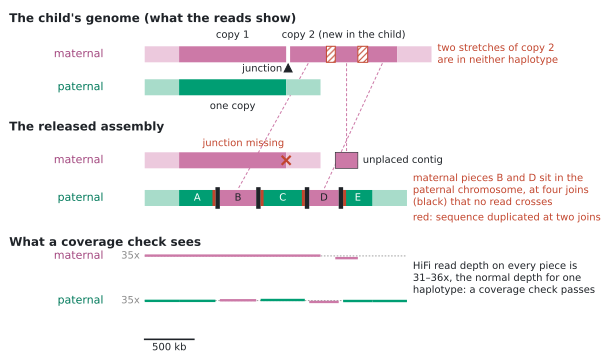
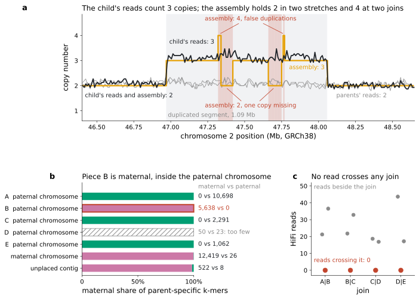
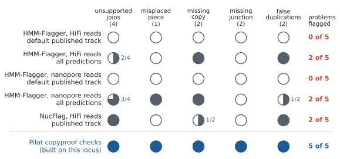
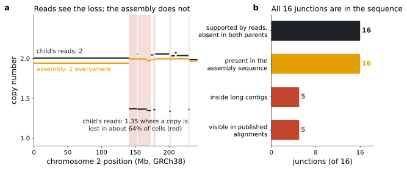
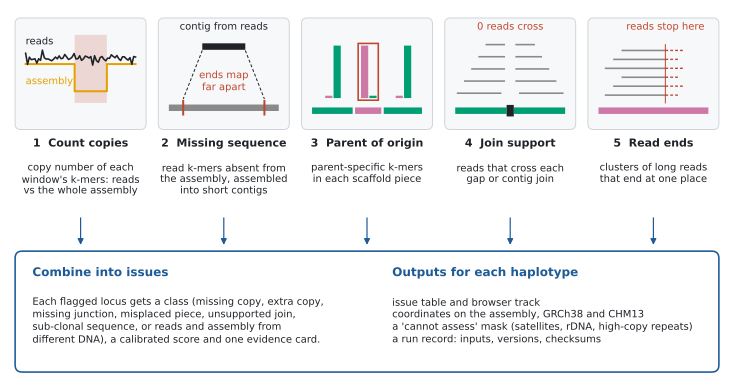
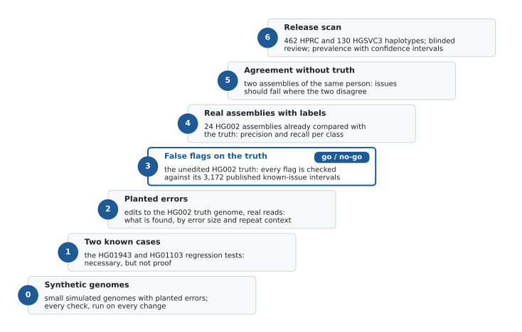

copyproofin development
Genome assemblies can hold the right sequence in the wrong place. copyproof is being built to find it.
Hundreds of human genomes are now released as assemblies, one sequence for each parental copy of every chromosome. Releases are checked by asking whether sequencing reads cover each position normally. A copy that is real but misplaced has normal coverage, so it passes. copyproof will audit released assemblies for copies that are missing, doubled, joined without evidence or placed on the wrong parental chromosome, using public data that existing checks do not combine.
problems at one example locus flagged by the default quality-control tracks published with HPRC release 2
haplotypes copyproof is designed to audit: 462 from HPRC release 2 and 130 from HGSVC3
HG002 assemblies (19 from different methods, plus 5 versions of the truth itself) already compared with a near-perfect truth genome: the test bed for accuracy before any release is scanned
1The problem
A modern human genome assembly has two sequences for each chromosome, one inherited from each parent (two haplotypes). HPRC release 2 (462 haplotypes) and HGSVC3 (130) are mostly assemblies of 1000 Genomes participants. They are the basis of the human pangenome, of new variant catalogues and of benchmarks, so their errors spread downstream.
Releases are checked mainly by aligning reads back to the assembly and looking at coverage. Too few reads suggest a collapsed copy, too many a false duplication, odd patterns a misjoin. These checks catch many errors, but they have a blind spot: sequence that is real but sits in the wrong place. Duplicated segments and stretches shared by both parental chromosomes are hard to place. An assembler can then:
- collapse two copies into one;
- put a correct copy on the wrong parental chromosome;
- stitch pieces together where no read connects them;
- duplicate sequence at the stitch.
Every piece is still real sequence, so reads cover it at normal depth. Figure 1 shows all four at one locus.
maternal sequencepaternal sequencethe released assemblyreadsa problemcopyproof

- The maternal chromosome holds one copy and lacks the junction.
- Two pieces of copy 2 (B and D) were placed inside the paternal chromosome, at four joins (black) that no read crosses.
- A third piece is an unplaced contig, and two stretches are absent.
- The joins duplicate sequence (red; widths exaggerated).
2A real example: a new duplication in a 1000 Genomes child
HG01943 is a boy from the 1000 Genomes Peruvian (PEL) population. His genome was assembled by the Human Pangenome Reference Consortium with his parents' data (trio phasing). Public reads show a 1.09-Mb segment of chromosome 2 present three times instead of twice:
- read depth and k-mer counts give 3.05–3.13 copies;
- 31 PacBio HiFi reads and 35 Illumina read pairs or split reads cross the new junction;
- neither parent shows any of these signals.
It is a new (de novo) duplication on the chromosome he inherited from his mother. The released assembly scatters the second copy, as Figure 1 shows.
Each problem leaves a trace in public data that the published checks do not read: the copy number of k-mers along the chromosome, the parent of origin of each piece, and reads across each join (Figure 2).

When these five problems are scored against the QC tracks HPRC publishes for this genome, the default tracks flag none of them and the most sensitive flag two (Figure 3). The pilot checks that later became copyproof's design flag all five. They were built after looking at this locus, so this shows the evidence exists; it says nothing about accuracy elsewhere.

3A second kind: cell lines are mixtures
1000 Genomes DNA comes from cell lines, which keep changing in culture. HG01103, from the Puerto Rican (PUR) population, carries a shattering and rejoining of chromosomes 2 and 14 (chromothripsis) in about 64% of its cells. The 16 new junctions are supported by 203 HiFi reads and 297 Illumina split reads or read pairs, and none appears in either parent.
Its trio assembly (1KGP PacBio, hifiasm) contains all 16 junctions, yet it misrepresents the event in three ways:
- At 11 junctions the long contigs follow the minority, unrearranged cells.
- At least one contig switches between the two cell populations, producing a sequence that exists in no single cell.
- Over the nine segments the rearranged cells lost (46.2 Mb), reads show 1.31–1.37 copies while the assembly holds two. A coverage model would probably call that real sequence a false duplication.
A review that reads only the published assembly-to-GRCh38 alignments sees 5 of the 16 junctions, because that file omits 75 of the 217 paternal contigs and the junction-side ends of five others (Figure 4).

A tool that audits releases therefore has to read the sequence itself, not only alignments. It also needs words for sequence that is real but present in only some cells, and for DNA samples that genuinely differ.
4What copyproof will do
copyproof is a standalone auditor for released assemblies, meant to complement coverage-based QC rather than replace it. For every haplotype it reports issues: loci where independent evidence disagrees with where, or how often, the assembly places a sequence. Each issue gets one of these classes:
- Missing copyfewer copies in the assembly than in the reads
- Extra copya false duplication, often at a join
- Missing junctiona breakpoint carried by the reads but absent from the assembly
- Misplaced piecea piece carrying the other parent's sequence
- Unsupported joina gap or join that no read crosses
- Sub-clonal sequencereal sequence present in only some cells, or a contig that switches between cell populations
- Different DNAthe reads and the assembly came from DNA samples that genuinely differ; not an assembly error
- Cannot assesssatellites, rDNA, high-copy repeats: the evidence cannot decide here, and copyproof says so rather than guessing
Each issue comes with an evidence card, a calibrated score, coordinates on the assembly, GRCh38 and CHM13, and a curation status. It stays an issue until someone has looked.
5How it will work
copyproof runs five checks on public data that already exist for almost every released sample:
- the NYGC 30x Illumina reads of each 1000 Genomes participant, which come from a DNA preparation independent of the assembly's and cover both parents in 602 trios;
- the long reads each consortium aligned to its own assemblies;
- the per-assembly annotation of gaps, segmental duplications and satellites.

What is new. Each check has a precedent:
- Merfin compares read and assembly k-mer copy number;
- HMM-Flagger and NucFlag read coverage and base signals;
- GAVISUNK validates duplications with ultra-long nanopore reads;
- Inspector and CRAQ use clipped reads;
- Merqury measures completeness and phasing genome-wide;
- truth-based comparison scores assemblies against the HG002 benchmark.
copyproof contributes four things: the audit of every scaffold piece and every join, an explicit "cannot assess" class, a single calibrated call per locus, and a scan of whole releases to measure how common this class of error is.
6How we will know it works
A detector is only useful if it rarely raises false alarms, so validation is ordered by what could stop the project. The key test is rung 3. copyproof runs on HG002, a genome whose diploid assembly is essentially complete and correct (the Q100 truth), with real HG002 reads. Every flag there is a false alarm, a residual error in the truth, or a real difference between DNA samples. The truth's maintainers publish 3,172 known low-confidence intervals (38.8 Mb), so each flag can be sorted into "known" or "new".
The target, set by the review that proposed copyproof, is to flag at most 2% of the truth's anchored duplication junctions. If copyproof cannot meet it, its scope narrows to scaffold joins and segmental duplications, where this error class lives.

7Scope, status and how to follow
The numbers on this page come from two loci. They show that this class of error exists and that public data can reveal it. How common it is across whole releases is the question copyproof is being built to answer.
The project is developed openly:
- the implementation guide sets out what to build, with which data, and the decisions to take along the way;
- the notebook records what each experiment showed;
- resources.tsv lists every public input.
Questions and suggestions are welcome as GitHub issues.
Key references
- Lucas et al. 2026. HPRC2: a human pangenome reference with near-complete coverage of common genetic variation. Preprint. doi
- Logsdon et al. 2025. Complex genetic variation in nearly complete human genomes. Nature. doi
- Byrska-Bishop et al. 2022. High-coverage whole-genome sequencing of the expanded 1000 Genomes Project cohort including 602 trios. Cell. doi
- Hansen et al. 2026. A complete diploid human genome benchmark for personalized genomics. Cell. doi
- Asri et al. 2026. Evaluating genome assemblies with HMM-Flagger. Preprint. doi
- Oshima 2025. NucFlag v0.3.3.1 (software). doi
- Formenti et al. 2022. Merfin: improved variant filtering, assembly evaluation and polishing via k-mer validation. Nature Methods. doi
- Rhie et al. 2020. Merqury: reference-free quality, completeness, and phasing assessment for genome assemblies. Genome Biology. doi
- Dishuck et al. 2022. GAVISUNK: genome assembly validation via inter-SUNK distances in Oxford Nanopore reads. Bioinformatics. doi
- Chen et al. 2021. Accurate long-read de novo assembly evaluation with Inspector. Genome Biology. doi
- Li et al. 2023. Identification of errors in draft genome assemblies at single-nucleotide resolution for quality assessment and improvement (CRAQ). Nature Communications. doi